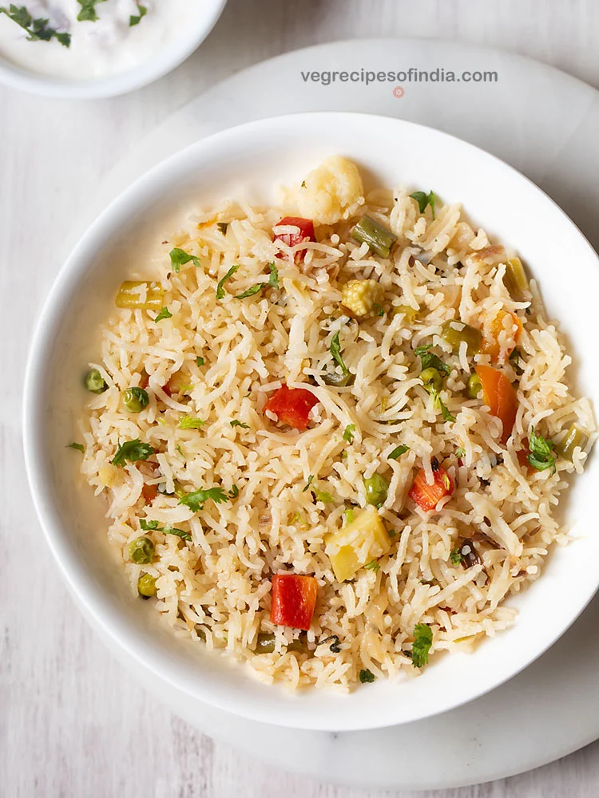
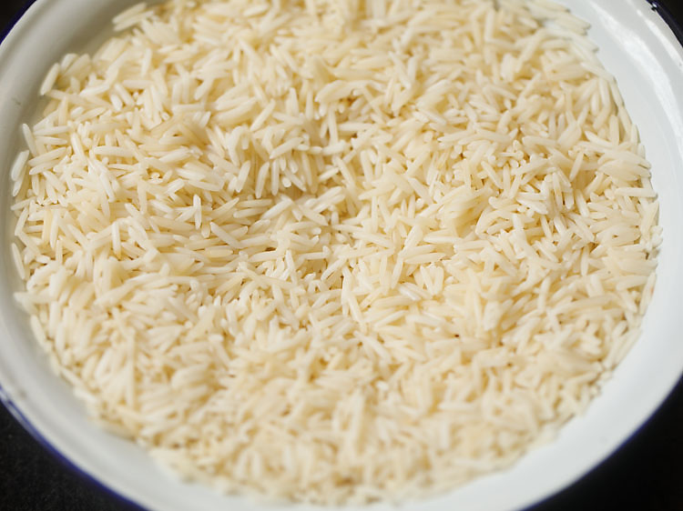
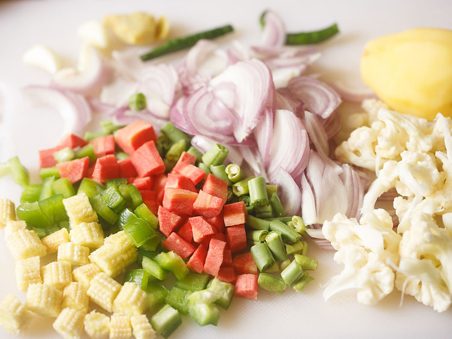
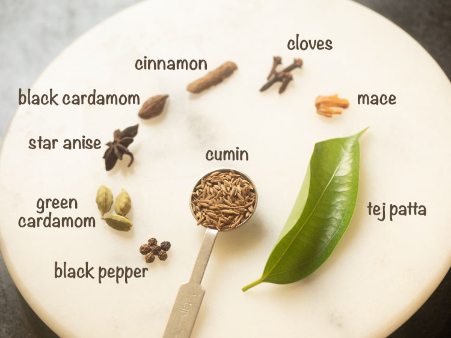
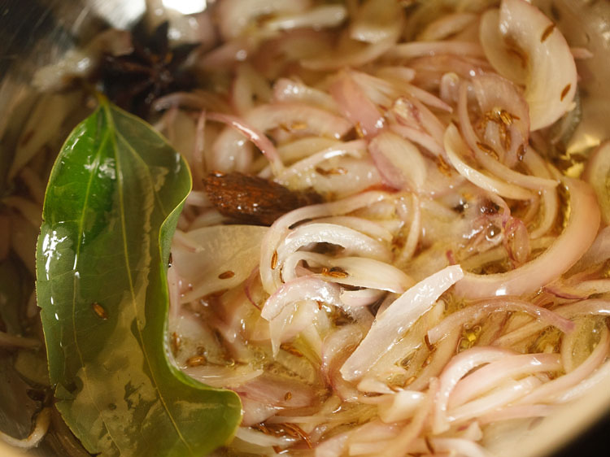
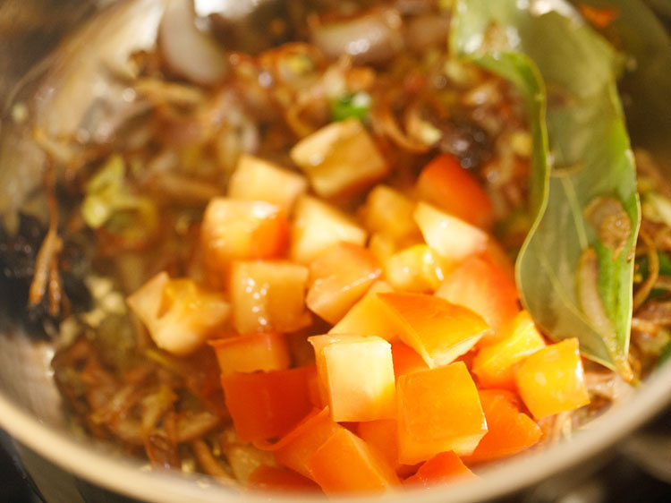
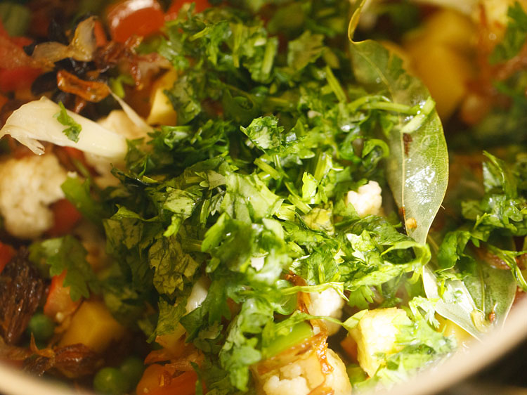

1. Begin by rinsing 1.5 cups basmati rice in water until it runs clear of starch. Next, soak the rice in enough water for 20 to 30 minutes.
2. After 20 to 30 minutes strain the rice of all the water and keep aside.

3. While the rice is soaking, prep the veggies. Rinse and chop them. Make
sure to chop the vegetables into small cubes.
For cauliflower, chop them in small to medium-sized florets. Peel, rinse,
and thinly slice 1 large onion.
4. Keep all the whole spices aside. From the below list of spices, you can skip black peppercorns, black cardamom, star anise and mace.
5. Add chopped ginger (1 to 1.5 inches), garlic (4 to 5 small to medium garlic cloves, peeled) and 1 to 2 green chilies (green peppers) in a mortar-pestle.

6. Crush to a paste. You can also use a small grinder for crushing these. Add a bit of water as required if grinding in a small grinder or mixer.
7. Heat 3 tablespoons ghee or oil in a deep thick bottomed pot or pan.
8. Once the ghee has melted and become hot, add all whole spices and fry
for a few seconds until they become fragrant.
The spices will also splutter while frying. The ghee should not smoke or
become too hot.
9. Add 1 cup of thinly sliced onions.
10. Mix the onions with the ghee and begin to sauté them.

11. Sauté the onions on a low to medium-low heat. First, the onions will become light golden. Continue to sauté while stirring often.
12. Sauté onions until golden.
13. Once the onions become golden, add the prepared, crushed ginger + garlic + green chili (chili pepper) paste.
14. Stir and sauté for some seconds until the raw aroma of the ginger & garlic goes away.
15. Add ½ cup chopped tomatoes.

16. Mix and sauté for 2 to 3 minutes on a low heat.
17. Now add all the chopped veggies. You will need about 1 to 1.5 cups of mixed chopped vegetables.
18. Add 2 to 3 tablespoons of chopped coriander leaves (cilantro). At this step, you can also add 2 tablespoons of chopped mint leaves.

19. Mix and sauté again for 2 to 3 minutes on a low heat.
20. Add the rice.
21. Mix rice gently with the rest of the ingredients.

22. Sauté rice gently for 1 to 2 minutes on a low to medium-low heat, so that the rice gets well coated with the oil or ghee.
23. Pour 2.5 to 3 cups water into the pan. I added 3 cups of water.
Depending on the quality of rice you have used, you can add less or more
water.
You can also replace water with vegetable stock if you prefer.
24. Add ¼ teaspoon lemon juice.
25. Season with salt. Mix very well. To figure out if you have added the
right amount of salt, check the taste of the water. You should feel some
saltiness in the water.
This means the amount of salt added is right. If the water does not feel
salty, then you need to add some more salt.
26. Stir and tightly cover the pot or pan with its lid.

27. Cover and cook the rice until all the water is absorbed. Cook on a low
to medium heat. Usually, in the beginning, I cook on a medium-low or
medium heat and then halfway through, I lower the heat.
Check a few times during cooking to ensure there is enough water.
Depending on the quality of rice, you may need to add more water. With a
fork, you can also gently stir the rice without breaking the rice grains.

28. Once the rice grains are cooked, fluff them and let the rice stand for 5 minutes covered with the lid.
29. Serve Veg Pulao garnished with coriander leaves (cilantro), mint leaves or fried onions and fried cashews or fried raisins.